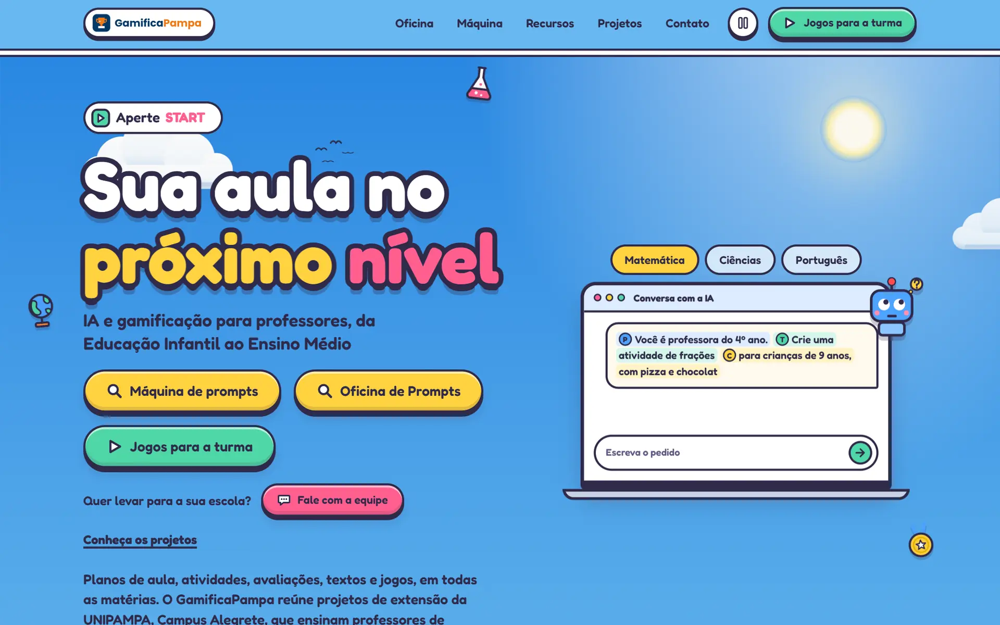
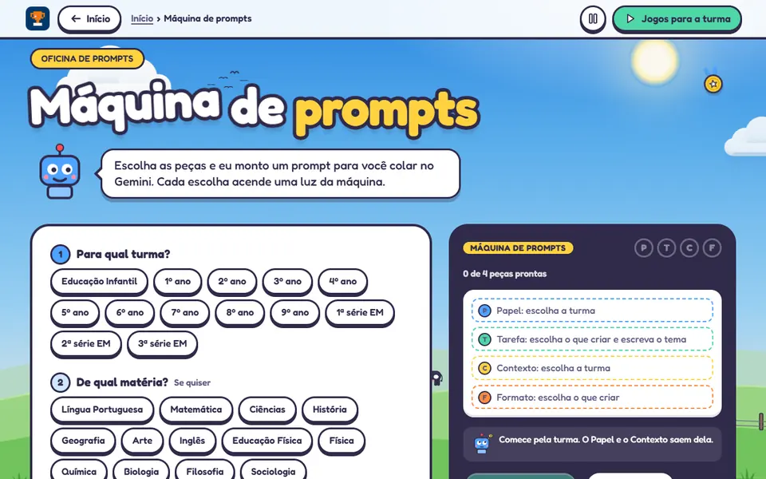
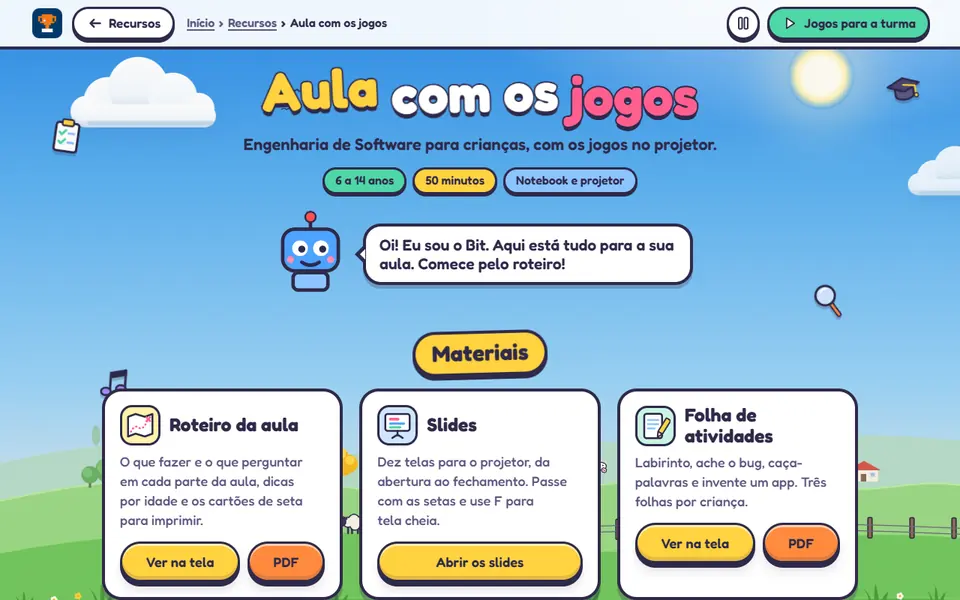
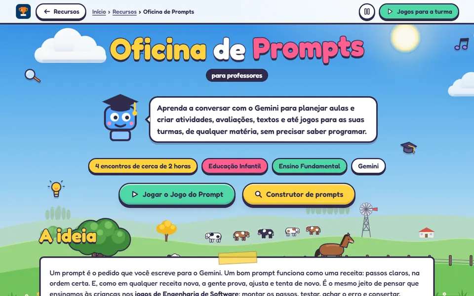

GamificaPampa
IA e gamificação para professores de escolas públicas de Alegrete. Eu faço o que chega na sala de aula: 19 jogos, a aula de 50 minutos, a Oficina de Prompts e a Máquina de prompts.

- Para quem
- Professores da Educação Básica e as turmas deles, de 6 a 17 anos
- Meu papel
- Jogos, aula, Oficina de Prompts, Máquina de prompts e boa parte do hub
- Com quem
- Projetos Educador 5.0 e GamificaEdu, UNIPAMPA, Campus Alegrete
- Feito com
- HTML, CSS e JavaScript, publicado no GitHub Pages
A ideia
O GamificaPampa reúne projetos de extensão da UNIPAMPA, Campus Alegrete, que levam inteligência artificial e gamificação a professores de escolas públicas de Alegrete/RS: o Educador 5.0, sobre IA, e o GamificaEdu, sobre gamificação. O site trata a formação como um jogo, em três níveis: Descobrir, Criar e Aplicar.
A minha parte é o que chega na mão do professor e das crianças. Comecei com jogos que apresentam a programação e o curso de Engenharia de Software; depois vieram jogos para as outras matérias, feitos como exemplo do que um professor consegue criar com a Oficina de Prompts.
O que tem dentro
Jogos de programação
- Ninja dos Bugs 6+
- Programação em Dupla 7+
- Conecta o Sistema 8+
- Arcade do Código, com três jogos e placar
- Caça aos Bugs
- Missão Dev
Jogos por matéria
- Fábrica de Sílabas e Detetive da Notícia Português
- Pizzaria das Frações, Balança e Reta do Bit Matemática
- Ciclo da Água Ciências
- Caminho da Escola e Linha do Tempo Geografia e História
- Ateliê das Cores e Circuito do Bit Artes e Ed. Física
- Inglês com o Bit, Laboratório de Equações e Genética do Bit
Para os professores
- Aula de 50 minutos: roteiro, slides, folha de atividades e certificado
- Oficina de Prompts: quatro encontros de cerca de 2 horas
- Curso online, Jogo do Prompt e construtor de prompts
- Máquina de prompts para todas as matérias
- Kit sem internet e medalhas para imprimir
Como foi pensado
-
QR code para a turma
O professor projeta o menu da turma e as crianças abrem os jogos no celular pelo QR code. Cada recurso tem um link curto para escrever no quadro e o botão Compartilhar, que manda o link pelo WhatsApp ou pelo Classroom.
-
Quando a rede cai
O kit sem internet junta o menu da turma, os jogos e a aula num arquivo para abrir com dois cliques no notebook da escola. Um workflow do GitHub monta o kit de novo a cada mudança.
-
Sem cadastro
Nenhum jogo pede login, e o site não coleta dados das crianças. É abrir e jogar, no celular, no tablet ou no projetor.
-
Pronto para imprimir
Roteiro, folha de atividades, certificados e medalhas saem em A4, a partir das próprias páginas.
Por dentro



De projeto pessoal para a organização
Os jogos e a Oficina nasceram num repositório meu, o Código Mirim. Quando viraram parte do GamificaPampa, passaram para a organização GamificaPampa no GitHub: o que professores e crianças usam ficou público, e o kit de quem conduz a formação foi para um repositório privado da equipe.
A regra da mudança foi não quebrar nenhum endereço. Já havia QR codes impressos em estandes, slides e convites, então cada endereço antigo ganhou um destino novo, e o repositório antigo virou uma ponte que leva cada link para o lugar certo.
Nas escolas e nos eventos
Em 14 de outubro de 2026 o GamificaPampa foi apresentado aos professores e à equipe gestora da Escola Tancredo Neves, em Alegrete, e ao Grupo de Pesquisa Diálogos do Pampa, na UNIPAMPA, Campus São Borja, na palestra "IA na Educação".
Meu papel e créditos
Fiz 19 dos 20 jogos, a aula, a Oficina de Prompts, a Máquina de prompts, o kit sem internet e as medalhas, e cuido de boa parte do hub. A primeira versão do site, a identidade visual, o mascote Bit e o jogo Robô pega a estrela são de Paulo Severo; os jogos e páginas que eu fiz usam essa identidade.
O hub e os projetos de extensão são coordenados pelos professores Paulo Silas Severo de Souza e Silvio Ereno Quincozes.